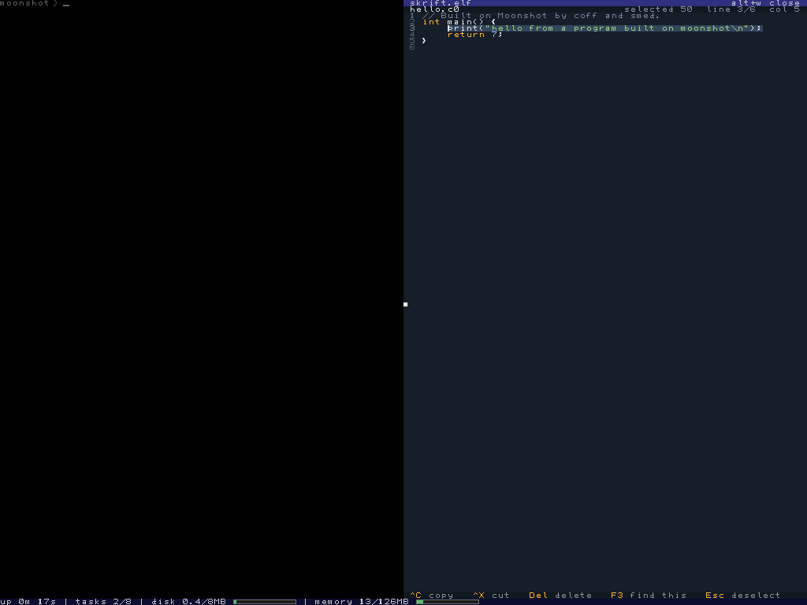

skrift
skrift is moonshot's text editor. it is an ordinary ring-3 program in a
kakel window of its own.
type edit (filename) in
skalman, or click a text
file in hylla. a name that does
not exist yet is a new file.

there are no modes. typing types, while the keys for everything else are along the bottom of the window. they change with what can be done right now, so a selection shows copy and cut and the find prompt shows next and previous.
keys
- F2
- save.
syncin the shell puts it on disk. - F3
- find. the match is selected as you type, enter goes to the next one and shift-enter to the one before.
- F4
- go to a line.
- F5
- save and run the file, c0 only. a new shell window runs
executeon it, so the program gets a window of its own and any error from coff stays in the shell. with text selected only the selection runs, as a program of its own when it has amain, else asmain's body. copying another user's text into a file of your own or running a selection with F5 or F6, is running it. - F6
- show the value of the selection or the line as c0, such as
6 * 7. skrift builds it as a small program with coff and smed and runs it, so nothing runs in the kernel. what has not answered after three seconds is stopped. - alt-w
- quit. with unsaved changes it asks first, while a second alt-w quits without saving.
- ctrl-c, ctrl-x, ctrl-v
- copy, cut and paste. with nothing selected they work on the whole line. a whole line pasted goes in above the cursor's line.
- ctrl-z, ctrl-y
- undo and redo, as far back as the file was opened. a word typed in one go is one step.
- ctrl-a
- select everything.
- esc
- close a prompt, or drop the selection.
the arrows, home, end, page up and page down move, with ctrl by word or to the start and end of the file. with shift they select. home goes to the first non-blank character on the line and then to the very start. a click puts the cursor there and a drag selects. enter keeps the indentation of the line it splits.